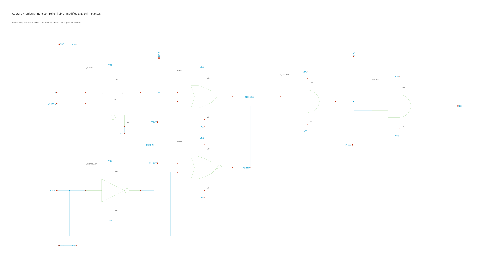
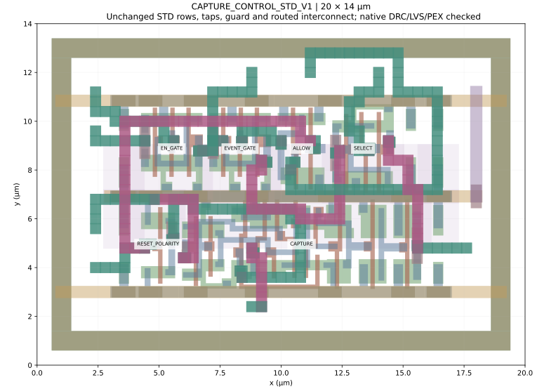
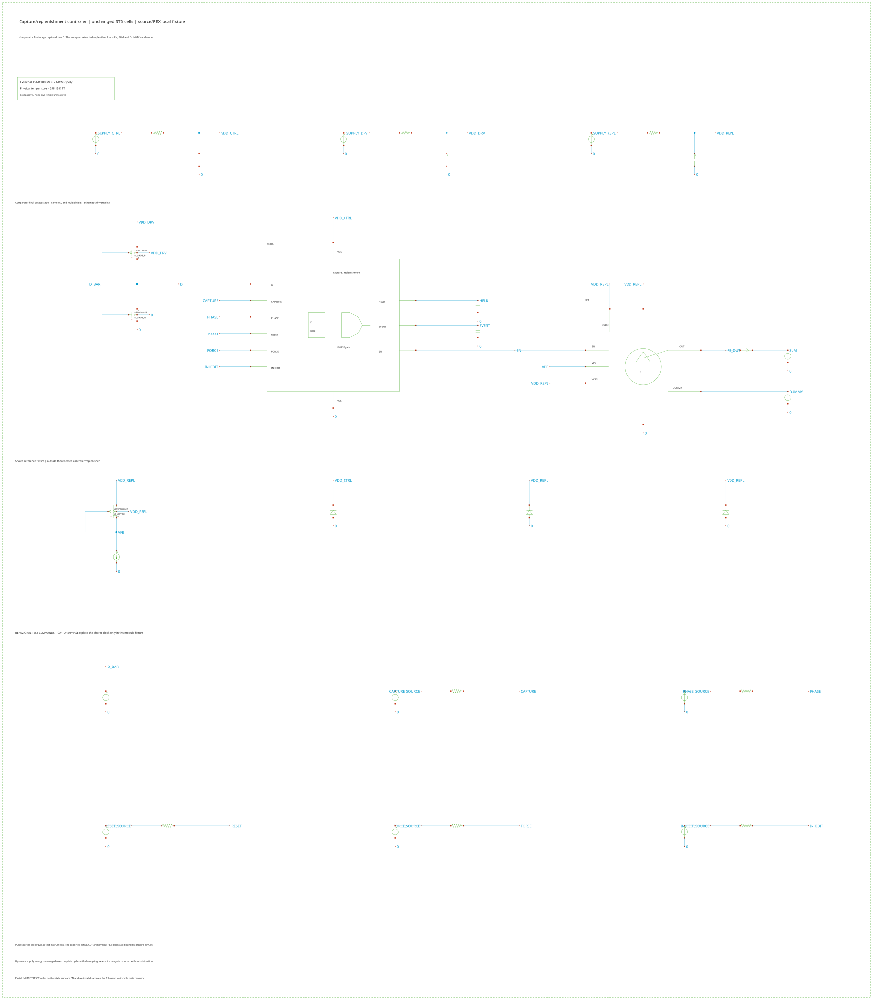

Architecture and detector replay · Physical comparator · Physical replenisher · Single-clock generator
Physical capture and replenishment controller
Loading pinned native evidence…
Modules/CAPTURE_CONTROL_STD_V1 uses six unchanged STD-cell instances in two compact rows, plus five well/substrate taps and a contacted guard. The complete module is 20 × 14 µm. All 45 MOS channels and the original master masks are independently checked.
Capture once; replenish on every qualified PHASE
The high-level latch follows D while CAPTURE is high. CAPTURE falling retains the comparator decision as HELD. OR selection, NOR validity and two AND gates generate EVENT and EN. Digital RESET clears/inhibits this path and has no connection across the CSA feedback capacitor.
HELD and EVENT can stay high over consecutive clocks. Each PHASE then produces a separate short EN pulse. Deliberately omitted CAPTURE windows in cycles 12–13 demonstrate retained state while D changes. FORCE, INHIBIT and RESET are separate controls; no configuration register or backend event-capture logic is included.
Cycles 17 and 18 deliberately assert INHIBIT or RESET during PHASE. EN is truncated and these are invalid charge samples. Cycle 19 demonstrates recovery. The demonstrated data setup/hold margins are bounded test conditions, not a complete aperture specification.
Power from complete supply cycles
The controller, comparator-output-stage replica and extracted replenisher have separate 1.8-V feeds, each with 10 Ω feed resistance and 100 pF decoupling. Power is integrated over 18 complete cycles. The controller curve is its upstream supply draw; the full fixture also includes the driver replica, replenisher, one reference branch and positive external command/clamp work.
Reservoir-energy changes remain recorded and are never subtracted from supply draw. The shared clock generator and shared bias/distribution costs enter the later complete-channel heat account.
| Implementation / temperature / rate | EN range (ns) | Controller (µW) | Whole fixture (µW) | Actual threads / requested | Logic/control |
|---|
Inspect every complete trace
Source and full-PEX records are available at 5, 10, 20 and 50 MHz, at room temperature and the exploratory cold model. The measured current includes the accepted extracted replenisher. These are noise-off switching/interference tests. Deterministic charge spread does not establish intrinsic-noise or electron resolution.
Readable source, layout and loaded fixture





Acceptance and remaining scope
Room temperature uses the factory process model. The 77-K card is an exploratory fit; inherited capacitance/noise and nominal-temperature extracted interconnect remain limitations. Reviewed well-diode low-temperature warnings are retained with the native records.